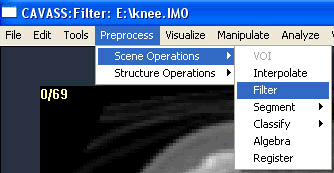
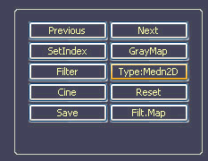

CAVASS Tutorial
MIPG
B.2 Use median and gaussian filtering operations for noise suppression
The purpose of these operations is to suppress random noise in the image.
Median Filtering
Click on Preprocess > Scene Operations > Filter
On Down-Right corner, Click on Type until filter type become Medn2D.

Then click on Filter. The result will show on the right side of the screen.
Click on Save to generate the filtered image for the entire input IM0 file and output the resulting IM0 file. Filtering is done in 2D.
Gaussian Filtering
On Down-Right corner, Click ton Type until filter type become Gauss2D
Then click on Filter. The result will show on the right side of the screen. Click on Save to generate the output file.